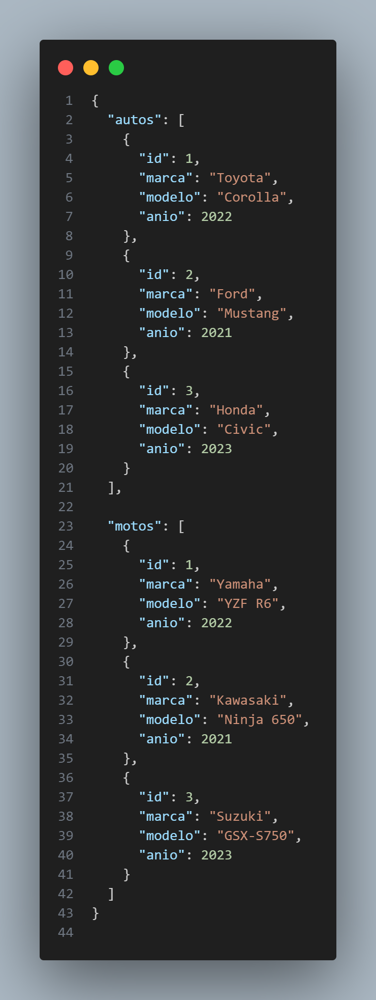
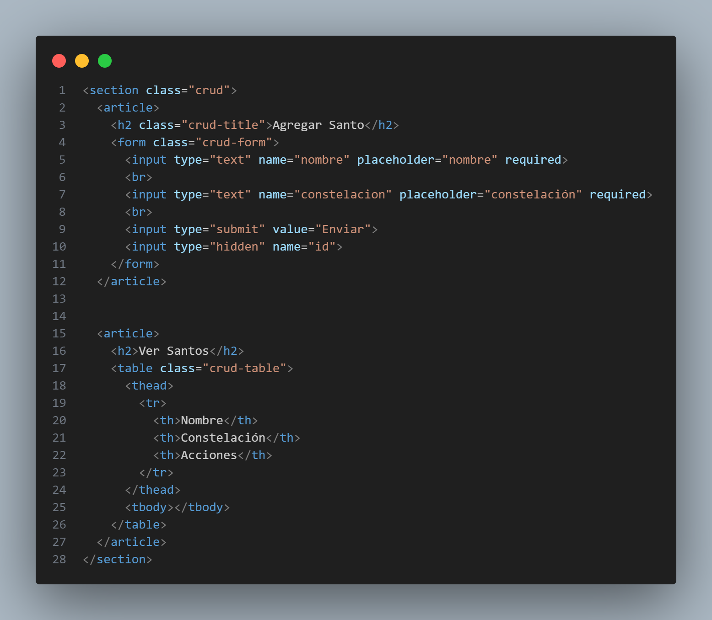
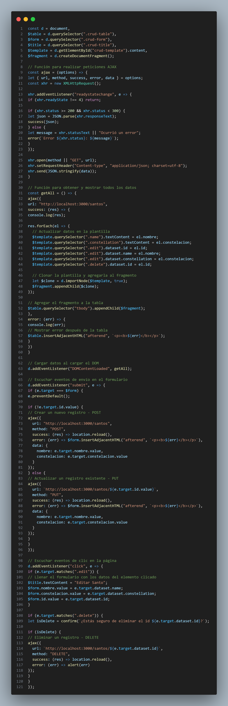

Api rest
Introducción a las API REST
API REST es un estilo arquitectónico para diseñar aplicaciones en red. Es un conjunto de restricciones y principios que definen cómo se exponen y acceden a recursos a través de la web. Las APIs (Interfaces de Programación de Aplicaciones) construidas utilizando el estilo arquitectónico REST se conocen comúnmente como APIs RESTful.
Principios y Conceptos Clave
- Recursos: En REST, todo se considera un recurso. Los recursos pueden ser entidades tangibles como objetos o conceptos intangibles como servicios. Cada recurso se identifica mediante una URL única (Localizador de Recursos Uniforme).
- Métodos HTTP: Las APIs RESTful utilizan métodos estándar de HTTP para realizar operaciones en los recursos. Los métodos HTTP más comunes son:
- GET: Obtener una representación de un recurso.
- POST: Crear un nuevo recurso.
- PUT: Actualizar un recurso existente o crear un recurso si no existe.
- DELETE: Eliminar un recurso.
- PATCH: Actualizar parcialmente un recurso.
- Sin Estado: Cada solicitud del cliente al servidor debe contener toda la información necesaria para entender y procesar la solicitud. El servidor no almacena ningún contexto del cliente entre solicitudes. Esto mejora la escalabilidad y simplifica el diseño del servidor.
- Interfaz Uniforme: La interfaz entre los clientes y los servidores debe ser consistente y bien definida. Esto generalmente implica el uso de métodos HTTP estándar y seguir una convención de nomenclatura de recursos.
- Representación: Los recursos pueden tener múltiples representaciones (por ejemplo, JSON, XML, HTML) para adaptarse a los diferentes requisitos del cliente. Los clientes especifican la representación deseada en las cabeceras de la solicitud HTTP.
- HATEOAS (Hipertexto como Motor del Estado de la Aplicación): Un principio que sugiere que la API debe proporcionar enlaces a recursos relacionados en la respuesta, permitiendo a los clientes descubrir y navegar por la API sin depender de conocimiento previo.
- Caché: Las respuestas pueden marcarse como cacheables o no cacheables, lo que permite a los clientes e intermediarios optimizar la eficiencia de la red.
- Sistema en Capas: Un cliente no puede determinar si está conectado directamente al servidor o a un intermediario, como un balanceador de carga. Esta separación de responsabilidades permite flexibilidad y escalabilidad.
Las APIs RESTful se utilizan ampliamente para construir servicios web debido a su simplicidad, escalabilidad y facilidad de integración. Se utilizan comúnmente para desarrollar aplicaciones que requieren intercambio de datos e interacción entre diferentes sistemas o servicios. Las APIs proporcionadas por servicios web populares como Twitter, Facebook y Google siguen el estilo arquitectónico REST.
JSON Server - API falsa local
API REST: CRUD con AJAX
 Ver Santos
| Nombre | Constelación | Acciones |
|---|
API REST: CRUD con Fetch
Agregar Santo
Ver Santos
| Nombre | Constelación | Acciones |
|---|